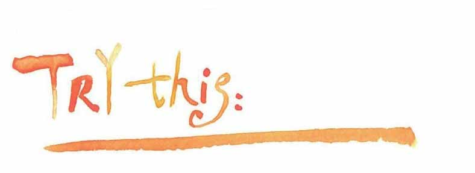
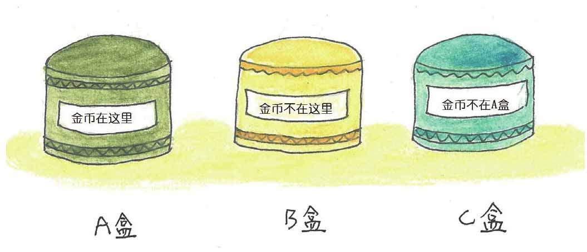
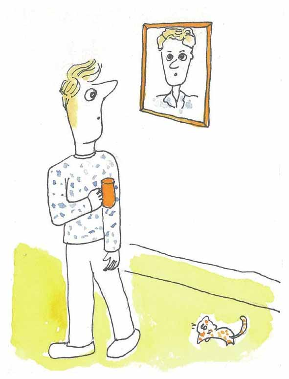
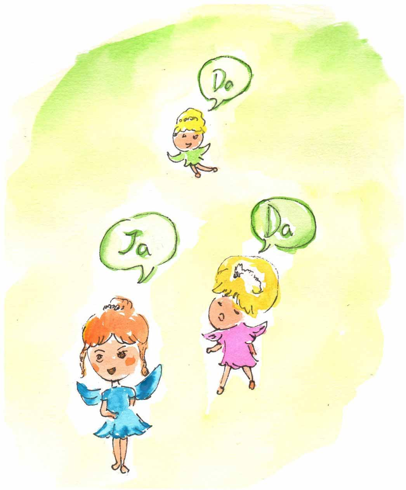

求解逻辑趣题是训练逻辑思维的一种好方法。
一些逻辑学家对逻辑趣题很感兴趣，雷蒙德·斯穆里安（Raymond Smullyan）是其中一位，他出版了十多本逻辑趣题和逻辑推理的书。斯穆里安还写过几本有关国际象棋的书，同时他还是一位杰出的音乐家。
他提出的逻辑趣题很有挑战性和娱乐性，下面的这个例子是斯穆里安诸多逻辑趣题中的一个：
一个岛上居住着两类人——骑士和流氓，骑士说的都是真话，而流氓只会说谎。有一天你来到这座岛上，你碰到两个人A和B，如果A说“B是骑士”，B说“我们两人不是一类人”。
请判断A、B两人分别是骑士还是流氓。
设想如果A是骑士，那他说的“B是骑士”就是一句真话，所以B是骑士。但是如果B也是说真话的骑士，就和B这个骑士说的“我们两人不是一类人”相矛盾。
再看如果A是流氓，那他说的“B是骑士”就是一句假话，所以B是流氓，那么B说的“我们两人不是一类人”就是一句假话，这是符合A是流氓的假设的。
所以结论是：A和B都是流氓。
下面再看看一个与两个孩子有关的“泥巴孩子难题”。
父亲让两个孩子（一个男孩，一个女孩）在后院玩，并告诉他们不要把身上搞脏。然而两个小孩在玩的过程中把爸爸交代的话给忘记了，他们的额头上都沾了泥巴。
当孩子们回来后，父亲说：“你们当中至少一个人额头上有泥。”
然后他问了孩子们两遍：“你知道你额头上有泥吗？”
孩子们将会怎么回答呢？
假设每个孩子都可以看到对方额头上是否有泥，但不能看见自己的额头，再假设孩子们都很诚实并且都同时回答每一次提问。
我们可以这样分析：
令s表示命题“男孩的额头有泥”，d表示命题“女孩的额头有泥”。
当父亲说：“你们当中至少一个人额头上有泥”时，表示“s或d”为真。
这时两个小孩都只能看到对方的额头上有泥，也就是说，儿子知道d为真，但不知道s是否为真；而女儿知道s为真，但不知道d是否为真。
所以当父亲第一次问那个问题时，两个孩子的回答将是“不知道”。
在男孩对父亲的第一次询问回答“不知道”后，女孩可以判断出d必为真。
同样，在女孩对父亲的第一次问话回答“不知道”后，男孩也可以判断出s为真。
因此，两个孩子的第二次回答将是“知道”。

小文，下面的几个逻辑趣题留给你来试试：
1.一个岛上居住着两类人——骑士和流氓，骑士说的都是真话，而流氓只会说谎。有一天，你来到这个岛上，你碰到两个人A和B，如果A说“我们当中至少一人是流氓”，B没吭声。请判断A、B可能的身份。
2.下面三个盒子中有一个盒子藏有一枚金币，每个盒子的铭牌上都写有一句话。

如果其中只有一句话是真，你知道金币在哪个盒子中吗？
3.铸造珠宝盒的人在珠宝盒上铸有这样一句话：珠宝盒不是由说真话的人打造的。
请问铸造珠宝盒的人是说真话的人还是说假话的人？
4.一位男子正在看一张照片：“我没有兄弟姐妹，不过这个男人的儿子是我父亲的儿子。”

照片里的人是谁？
下面是雷蒙德·斯穆里安给出的“世界最难逻辑题”。
问题是这样的：有甲、乙、丙三个精灵，其中一个只说真话，一个只说假话，还有一个是随机决定何时说真话，何时说假话。你可以向这三个精灵问三个是非题，而你的任务是从他们的答案中找出谁说真话，谁说假话，谁是随机答话。这个难题困难的地方是这些精灵只会以“Da”或“Ja”回答，但你并不知道它们的意思，只知道其中一个词代表“对”，另外一个词代表“错”。
你应该问哪三个问题呢？
